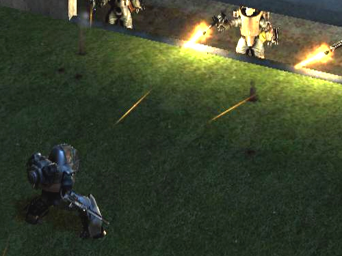

Vilain Game Designer ! Pas de biscuit pour toi ! V
L'article original est écrit par Ernest Adams publié par Gamasutra (juin 2004).
L'auteur original n'est en aucun cas reponsable de la précision de cette traduction.
L’heure est venue une fois de plus de publier dans le Designer’s Notebook le recueil annuel des bugs, des gâchis et des erreurs de jugement ou de goût – ces éléments qui font qu’un jeu est moins bon qu’il ne devrait l’être. Ces Twinkie Denial Conditions ou TDC (NDT : littéralement, condition pour refuser un biscuit, à savoir à un mauvais game designer) ne se limitent pas uniquement aux mauvais jeux ; parfois, il ne s’agit que d’une petite imperfection dans un jeu qui est tout à fait bon dans son ensemble.
Presque toutes ces remarques m’ont été envoyées par des lecteurs (et si vous avez des remarques à faire sur les choix de designers qui ne mériteraient pas leur biscuit, j’aimerais le savoir, envoyez moi un mail [NDT : en anglais] à notwinkie@designersnotebook.com). Malheureusement, je ne suis pas suffisamment riche pour me payer à la fois une PS2, une XBox, une Gamecube, une Dreamcast, une GBA et un PC, je n’ai pas donc pu vérifier tous les exemples mentionnés. Mais même si un détail ou deux est incorrect, c’est le principe qui compte.
Briser l’équilibre d’un jeu, tout ça pour une fonctionnalité « trop cool »
Bryan Buschmann nous écrit :
La plus récente des perles que j’ai pu voir est l’œuvre des réalisateurs de Silent Storm. Ils vous proposent un jeu d’action-infiltration au tour par tour dans un contexte de Seconde Guerre mondiale. Et au cours d’une mission, ils balancent de véritables tanks sur pattes, qui sont littéralement invulnérables à toutes les armes, à l’exception du nouvel équipement, qui existe uniquement sous la forme d’un gigantesque canon laser impossible à manier et que vous n’avez jamais vu auparavant — ou sous celle d’un laser monté sur l’une de ces fameuses monstruosités sur pattes. Une fois que vous avez trouvé et utilisé ces armes lasers pour tuer la personne qui se trouve à l’intérieur du tank (et non le tank lui-même), vous pouvez rentrer dedans et en substance transformer vos compagnons en une légion de monstres invincibles, détruisant ainsi totalement l’équilibre du jeu. C’était vraiment triste à voir, une telle réussite de style et de technologie ruinée lors des niveaux suivants par un game design ridicule. Heureusement, ils ont écouté les joueurs et décidé de revoir entièrement leur implémentation dans l’extension du jeu.
Il y avait des gens sur les forums qui postaient des répliques aussi brillantes que « Bon, si on ne tient pas compte de la stratégie précédente qu’on utilisait avant et qu’on ne tient compte que de ce qu’on est en train de faire, ça va ! »…Je n’aime pas qu’on me dise en plein milieu d’un jeu que mon précédent style de jeu est maintenant obsolète.

Je pense que Bryan a bien résumé la situation. Beaucoup de designers succombent à la tentation. Leur désir d’incorporer, disons, des armes absolument trop cools prend le dessus sur leur désir d’équilibrer le jeu correctement.
Personnellement, je ne vois pas de toute façon ce que de gigantesques tanks sur pattes peuvent faire dans un jeu qui traite de la Seconde Guerre mondiale ; nous nous trouvons soixante ans après le Jour J et nous ne disposons toujours pas de tels tanks – et je doute que cela arrive un jour, car ceux-ci ne sont absolument pas pratiques. Science-fiction, OK – simulation historique, pas OK.
Les ennemis qui ressuscitent lorsque vous dormez…
…ou quand vous sauvegardez le jeu. Anita Ray (ainsi que plusieurs autres personnes) m’a écrit pour se plaindre de ce problème. Elle tourne les choses de la façon suivante :
Vous venez de réussir à tuer le Monumental et Titanesque Démon de Krall et ses 18 000 sbires. Votre santé et votre mana sont épuisés, mais maintenant qu’ils sont tous morts, le jeu vous permet de vous reposer et de continuer ainsi votre aventure. Vous vous reposez donc… Et vous découvrez que, comme par magie, le Monumental Démon Titanesque et ses sbires ont été ressuscités (probablement avant même que vous n’ayez pu vous soigner, tant qu’on y est). Vous mourez d’une mort atroce, ignoble. Ce problème a l’air de se produire souvent aussi après une sauvegarde.
C’est une programmation paresseuse qui ruine tout ce que le joueur a accompli. Ceci transforme le repos et la sauvegarde en rencontres potentiellement mortelles qui frustrent au dernier degré les joueurs (ou au moins moi). Et pourtant, cela ne semble pas inhabituel dans les RPG. J’ai eu ce problème dans des jeux qui étaient par ailleurs tout à fait corrects (Morrowind et Baldur’s Gate me viennent à l’esprit). Ceci a provoqué chez moi une utilisation de la langue anglaise encore plus créative que celle provoquée par l’administration politique locale, c’est dire.
Ah, si seulement ce problème pouvait être attribué aux programmeurs ! Désolé Anita, ce coup-ci, la faute est entièrement la nôtre, celle des game designers. Le problème de l’apparition et de la résurrection des monstres est très compliqué et j’en parlerai dans un prochain article, mais je suis sûr d’une chose : quand un boss meurt, il devrait rester mort à moins que vous ne rechargiez le jeu à un stade où vous ne l’aviez pas encore rencontré. Je ne suis pas un fan des bosses de toute façon, mais je dois reconnaître qu’il s’agit d’une convention standard, nous avons donc besoin de règles pour les implémenter. Un boss ne devrait pas être ressuscité à moins qu’il y ait une raison claire à cela (et une façon de l’en empêcher). Et un boss ne devrait certainement jamais réapparaître de la même façon que l’ennemi de base.
Commandes impossibles à configurer
Quelqu’un qui signe du nom de « Deathbliss » fulmine ainsi :
Je viens juste de pouvoir jouer à Brute Force sur Xbox et, devinez quoi ? Il n’est pas possible de configurer les commandes de la façon que je veux ! Ceci devient un problème de plus en plus important sur Xbox, et j’ai entendu dire que c’était la même chose pour la PS2. Le meilleur système de configuration des commandes que j’ai vu était celui de Quake Arena 3 sur Dreamcast – c’est comme ça que cela devrait être fait. Dans un autre genre, sur la scène PC, nous avons droit à des jeux comme Silent Hill 2 SANS UTILISATION DE LA SOURIS ! Ou bien comme Gothic où il est impossible de configurer ou d’utiliser la souris comme vous le voudriez.
Je ne pourrais pas être plus d’accord. C’est pire qu’une TDC ; n’importe quel gros jeu commercial qui ne permet pas au joueur de reconfigurer les commandes mérite de finir au pain sec et à l’eau. Ceci est particulièrement vrai s’il s’agit d’un jeu de réflexes nécessitant une grande dextérité, où un dixième de seconde compte. La possibilité de configurer les commandes est complètement triviale à implémenter, ne coûte presque rien en termes de RAM ou d’espace de stockage et rend votre jeu beaucoup plus accessible. Quand les game designers réaliseront-ils que la prise en compte des facteurs humains n’est pas juste réservée aux avions de combat ou aux centrales nucléaires ?
Ceci doit néanmoins être fait correctement. R. Alan Monroe nous a écrit pour se plaindre des…
Mauvais systèmes de configuration
M. Monroe écrit :
Quand je modifie les touches pour un jeu, comme pour un FPS, je peux cliquer sur action et appuyer sur une touche, mais comment puis-je savoir quelles touches sont déjà utilisées ? Il y a trois mauvaises façons de gérer cette situation : un message d’erreur qui indique que la touche est déjà utilisée ; la nouvelle action pique la touche à l’action à laquelle elle était affectée ; ou je finis par devoir lire une liste sans fin dans une minuscule fenêtre pour voir si la touche est déjà utilisée.
Pourquoi ne pas montrer une liste de toutes les touches non affectées ou bien afficher l’ensemble des touches en quatre ou cinq colonnes de façon à ce que je puisse toutes les voir d’un seul coup ?
Une fois de plus, le faire correctement est juste aussi simple que de le faire mal et ne vous coûte rien, alors, pourquoi ne pas le faire correctement ?
Checkpoints hors de propos
Celui-ci est un peu difficile à décrire de façon générique, je laisserai donc la parole à Jason Seip qui nous présente ceci dans un exemple particulier. Il explique que ceci lui est arrivé dans Splinter Cell sur Game Cube et que c’était « un mauvais moment dans un bon jeu. »
Je me trouvais dans un bâtiment qui était sur le point d’être détruit par une bombe. J’ai mal interprété mes ordres de mission, car je croyais que j’étais censé fuir alors qu’en réalité j’étais censé désamorcer la bombe. La sauvegarde A est intervenue au moment où on me parlait de la bombe et où on m’indiquait le temps qu’il me restait avant l’explosion. J’ai couru aussi vite que j’ai pu à travers le niveau, dépassant la pièce avec la bombe et me frayant un chemin malgré les ennemis. Juste avant que le compte à rebours arrive à zéro, je suis passé au niveau d’un checkpoint B et j’ai pensé avoir réussi, avant de voir le jeu se terminer cinq secondes plus tard parce que la bombe venait d’exploser. Quand j’ai rechargé ma partie, je me suis retrouvé au checkpoint B, de telle sorte que la bombe a re-explosé au bout de cinq secondes. Ceci ne cessait de se répéter, me laissant sans possibilité de revenir en arrière ou de résoudre le problème.
La morale, d’après lui, est :
Ne laissez pas le joueur atteindre le checkpoint B s’il n’a pas complètement rempli les objectifs au niveau du checkpoint A. Le checkpoint B aurait dû se trouver dans une zone complètement inaccessible au joueur tant que la bombe n’avait pas été désamorcée.
Jason s’est en fait retrouvé face à l’un des problèmes fondamentaux de la narration interactive linéaire : le problème du flot narratif. Comment s’assurer que le joueur a fait tout ce dont il a besoin au moment où l’histoire atteint son point culminant, son climax, quand vous ne contrôlez pas ses actions ? Il y a de nombreuses solutions, dont l’une des plus simples est la suivante : ne débloquer les portes vers le climax dramatique qu’une par une, de sorte que le joueur ne puisse pas s’y rendre tant qu’il n’est pas prêt à y aller. Jason s’est en fait retrouvé en avance sur l’histoire en sautant une étape, de sorte que l’histoire a pris un mauvais tournant et a abouti à une impasse.
Encore d’autres éléments qui détruisent la magie
Dans mon tout premier article « Vilain Game Designer ! Pas de biscuit pour toi ! », j’ai mentionné des éléments qui détruisaient la magie : des éléments du jeu qui sont ridicules ou inappropriés et qui détruisent la sensation d’immersion. Comme vous pouvez l’imaginer, ceci couvre un large panel d’erreurs. Gregg Tavares nous en propose quelques uns :
Une musique qui n’est pas adaptée au jeu
Dans de nombreux jeux, il est important d’établir un lien émotionnel avec le jeu. La musique aide à créer cette émotion quand elle est utilisée de façon adéquate (enregistrée comme dans un film, par exemple) et la détruit quand elle est mal utilisée (une musique « de jeu » générique et énergique, une musique connue, une musique choisie par l’utilisateur, etc.). [Je voudrais ajouter que la pratique si populaire qui consiste à utiliser des musiques complètement inappropriées pour les jeux est un échec esthétique aussi dramatique que pour les films. M.C. Hammer pour La famille Addams ? Pardon ? Le département marketing est devenu fou. – Ernest]
Des dialogues in-game qui font référence à des éléments du monde réel
Dans Metal Gear Solid, le Commandant appelle Snake sur le codec et dit quelque chose comme « Snake, pour ouvrir la vanne, appuie sur le bouton A de la manette. ». Hein ? Dans le monde réel, personne ne ferait référence à la manette, parce que celle-ci n’existe qu’à l’extérieur de l’univers du jeu. Grand Theft Auto proposait une meilleure implémentation de ceci. Dans GTA 3, les personnages du jeu restaient dans leur personnage en permanence, et les explications liées au gameplay étaient affichées à l’écran, indépendamment des personnages.
Des situations extrêmement ridicules
Ceci arrive bien sûr dans de nombreux films hollywoodiens aussi. Par exemple, vous disposez de 18 heures pour arrêter une bombe atomique sur le point d’exploser. Oh, je sais, gaspillons de précieuses minutes à flirter avec un personnage in-game (Metal Gear Solid). Le monde sera détruit demain, alors allons au parc d’attractions (Final Fantasy VII). Je suis dans un coin avec un garde à à peine un mètre de moi, c’est le moment idéal pour une conversation avec le Commandant sur le codec (Metal Gear Solid encore).
Les cinématiques qu’il est impossible d’interrompre
Jerry Strand et « loganb » ont écrit tous les deux pour se plaindre des cinématiques qu’il est impossible d’interrompre. Parfois, il y a d’incroyablement longues introductions que vous devez subir chaque fois que vous recommencez le jeu ; parfois, des cut-scenes juste après un point de sauvegarde. Si vous vous faîtes tuer et devez recharger depuis ce point de sauvegarde, vous devrez revoir le film. J’y ajouterai ceci : les cinématiques de 15 secondes impossibles à interrompre qui surviennent chaque fois que vous lancez une invocation dans Final Fantasy 8 (je n’ai pas joué aux autres jeux de la série, je ne sais donc pas s’ils en sont tous coupables [NDT : ils le sont.]). Elles sont impressionnantes la première fois, intéressantes les trois ou quatre fois suivantes, puis excessivement fatigantes au-delà. C’est à vous décourager de lancer un sort, voire de jouer au bout d’un moment.
Bon, en fait, j’aime les cinématiques dans les jeux (oui, je sais, ça ne respecte pas le Dogma 2001), tant qu’elles sont bien réalisées, courtes et intéressantes, compatibles avec le reste du jeu et qu’elles apportent véritablement quelque chose à l’intrigue. Hélas, la réunion harmonieuse de toutes ces qualités ne se produit que dans environ 25 % des cas. Le reste du temps, elles sont bébêtes, inappropriées, voire les deux, et je veux un bouton pour les passer et aller directement jouer. Une fois de plus, la solution est triviale – alors, faîtes le !
Conclusion
Voici pour cette édition de Vilain Game Designer ! Pas de Biscuit pour toi ! Merci à tous ceux qui ont écrit et mes excuses pour toutes les suggestions pour lesquelles je n’avais plus de place. Mais continuez d’envoyer des e-mails (NDT : en anglais) à notwinkie@designersnotebook.com, parce qu’en un an, vous pouvez tous jouer à beaucoup plus de jeux et repérer beaucoup plus de TDC que je ne le peux.
Ajouter un commentaire
Commentaires

Bravo pour ces articles toujours aussi intéressant, je me reconnais souvent dans beaucoup de ces expériences. (et merci pour m'avoir rappeler Dungeon Keeper, un chef d'œuvre ce jeu). J'ai une expérience sur STALKER des ennemis ressuscitent. J'arrive à la fin du jeu et je m'apprête à franchir le cap de non retour, vous savez le moment ou le PNJ vous averti assez subtilement que c'est dangereux de poursuivre et que peut être (assurément) vous ne pourrez plus revenir après avoir répondu "oui je suis vraiment sur" (tres utilisé dans les final fantasy d'ailleurs). Assez pressé de voir la fin, je continue mon aventure pour arriver laborieusement (j'aurai dut l'écouter ce PNJ finalement) a ce que j'ai surnommé le couloir de la mort, comprendre un couloir rempli d'ennemi, j'arrive finalement après plusieurs essai à nettoyer ce couloir et sauvegarde malgré le très peu de PV me restant. Quel surprise quand j'ai rechargé ma partie et que derrière moi se trouvait tout ce joli monde en train de m'abattre lâchement dans le dos.. (bien sur j'avais écrasé mon ancienne sauvegarde)

Je suis d'accord pour Metal gear Solid, je pense que le jeu joue beaucoup avec le 4eme mur et que M. Kojima mérite son biscuit =)
"Dans Metal Gear Solid, le Commandant appelle Snake sur le codec et dit quelque chose comme « Snake, pour ouvrir la vanne, appuie sur le bouton A de la manette. »."
Je pense que l'exemple de Metal Gear Solid est un mauvais choix, car si mes souvenirs sont bons, le coté absurde est largement assumé dans MGS, et les références au monde réel sont plus nombreuses et plus importantes que ça (code sur le boitier de jeu, changer la manette de port pour vaincre un boss, personnage qui s'adresse directement au joueur).
Sinon, checkpoint mal placé, mon pire souvenir, c'est dans Area 51 (ok c'est pas une référence mais bon), juste avant de combattre le boss qui ressemble à un petit Gris, ya un checkpoint. Seulement, avant ce checkpoint, ya plusieurs chemin (dont un où on trouve des soins). Problème, j'ai passé le checkpoint AVANT d'aller récupérer les objets de soins, et j'avais très peu de vie. Du coup, je meurt contre le boss, je revit avec un tout petit peu de vie, pas moyen de retourner en arrière (ou les soins ont disparu je ne sais plus) et du coup, j'étais bloqué. En plus, c'est assez loin dans le jeu, pas le courage de recommencer du début. J'ai lâché le jeu pour ça, c'est vraiment de la merde ce genre de couille.

(Tiens, et bien le bonjour Rastagong.)

@Gaetz Je suis d'accord, si on devait appliquer à la lettre toute cette ribambelle de conseils, on en sortirait jamais. Parfois, il faudrait davantage confronter les conseils et les théories avec la réalité. Même s'ils sont très intéressants, parfois je doute de leur faisabilité.
À part ça, cette liste reste comme d'habitude, très instructive. :)
J'aimerais juste revenir sur un point que je conteste : selon Adams (ou plutôt selon Tavares, l'auteur original de la remarque), les dialogues in-game qui font référence au monde réel détruiraient l'immersion. Il s'agit en général des dialogues didactiques expliquant au joueur comment accomplir certaines actions avec sa manette (comme le montre l'exemple de Metal Gear Solid). L'alternative proposée est tout simplement d'afficher les instructions à part à l'écran.
Et bien je trouve cette alternative encore pire ! Afficher une information à l'écran sans aucun contexte, voilà ce qui détruit l'immersion ! Un « Appuyez sur A pour tirer » sorti de nulle part est artificiel et charge l'interface au détriment de l'interaction. De plus, c'est un texte qui apparaît, aux yeux du joueur, dicté par les développeurs. Comment détruire la magie d'une meilleure façon ?
En revanche, faire parler un personnage pour donner cette instruction n'endommage pas l'immersion. Certes, c'est incohérent. Mais ça s'insère à merveille dans la narration. Un commandant autoritaire peut ainsi s'exclamer « Mais appuie donc sur A, soldat ! ». Et puis la mise en abîme n'est pas un procédé bien méchant, bien souvent c'est assez comique.
Une autre alternative serait d'insérer les instructions dans l'environnement, comme le fait si bien Braid dans le premier niveau du jeu :
C'est toujours très intéressant. Ernest Adams exagère un peu quand même : ça fait cinq articles contenant autour d'une dizaine de préconisations qu'il publie. Il devrait commencer à se rendre compte que le nombre de piège à éviter est ÉNORME. Le temps requis pour éviter un des pièges est négligeable, mais le travail de finalisation nécessaire pour les éviter tous est très grand !
Quand je lis :
La possibilité de configurer les commandes est complètement triviale à implémenter, ne coûte presque rien en termes de RAM ou d’espace de stockage et rend votre jeu beaucoup plus accessible.
…je souris amèrement. Ce genre de fonctionnalité est en effet facile à implémenter (si l'architecture du moteur n'est pas complètement folle). Il n'en reste pas moins qu'elle prend plusieurs heures à implémenter et à tester pour un programmeur unique. Multiplié plusieurs dizaines de fois et sans prendre en compte les problématiques de design, il faudra plusieurs mois pour fignoler un jeu.